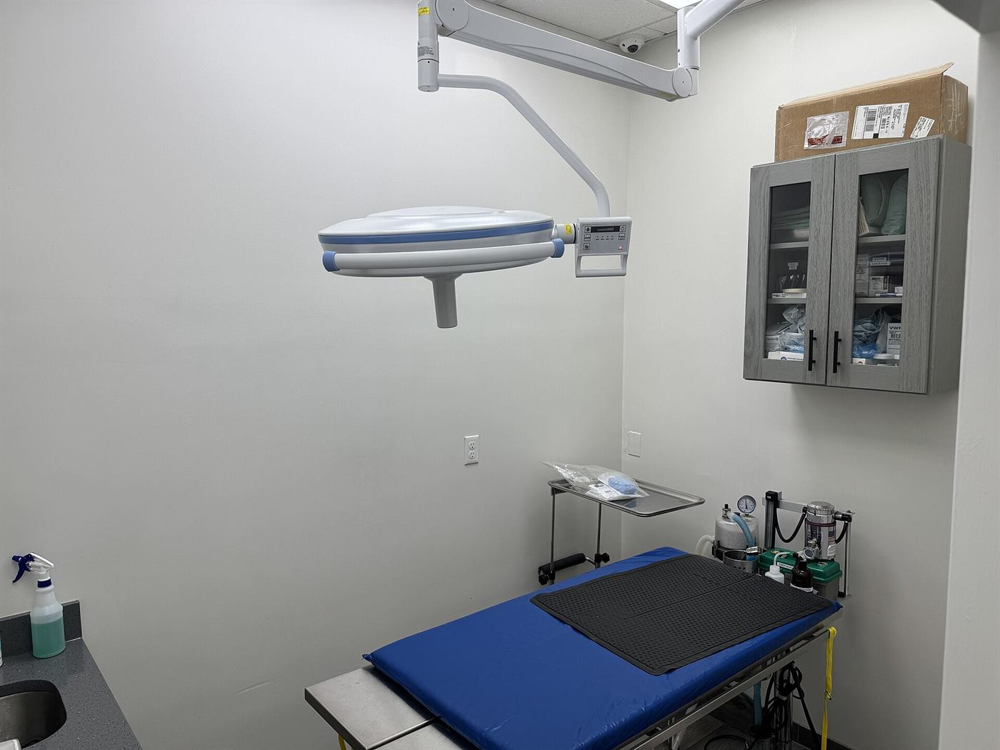
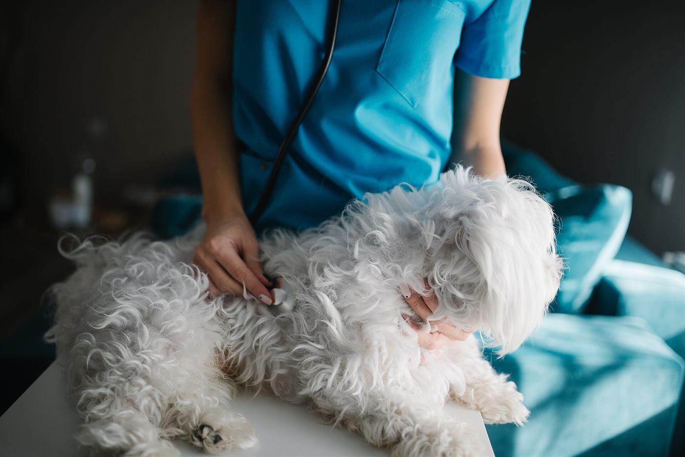
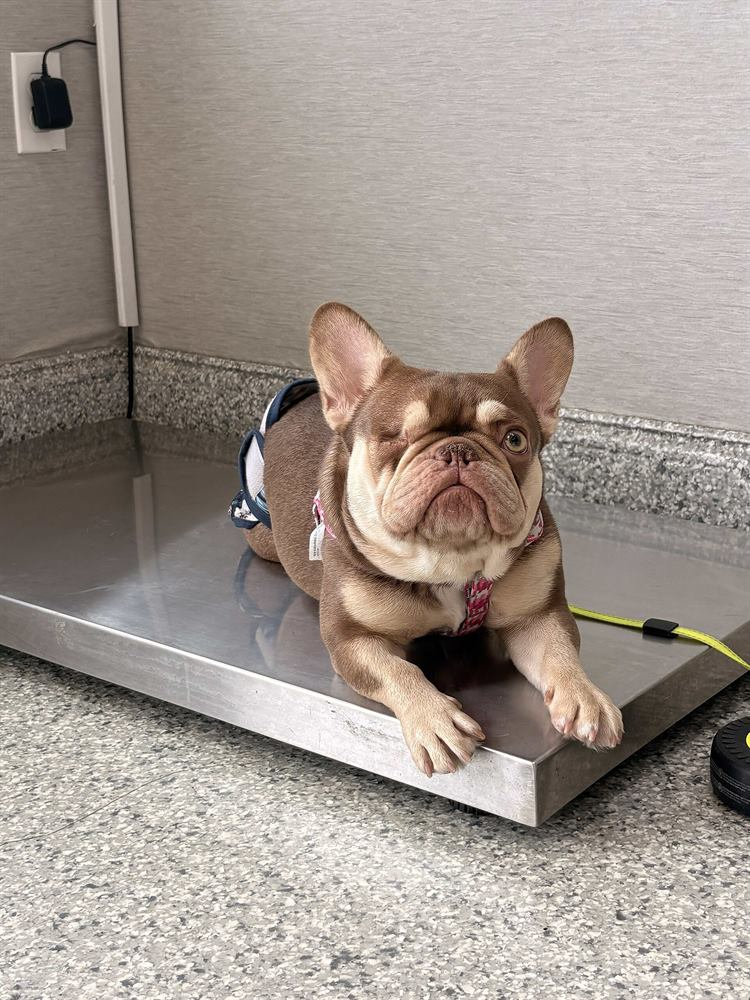
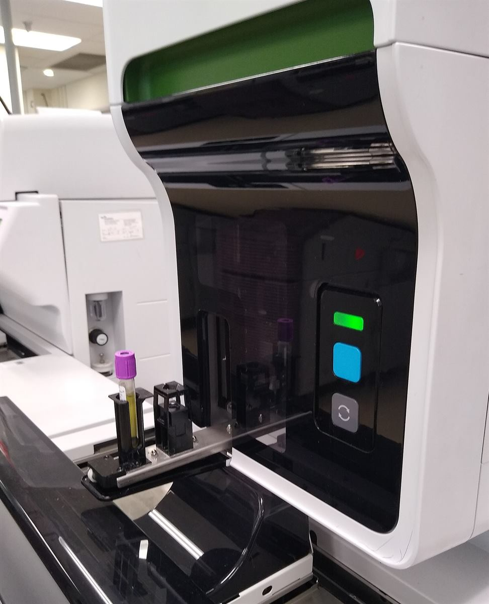
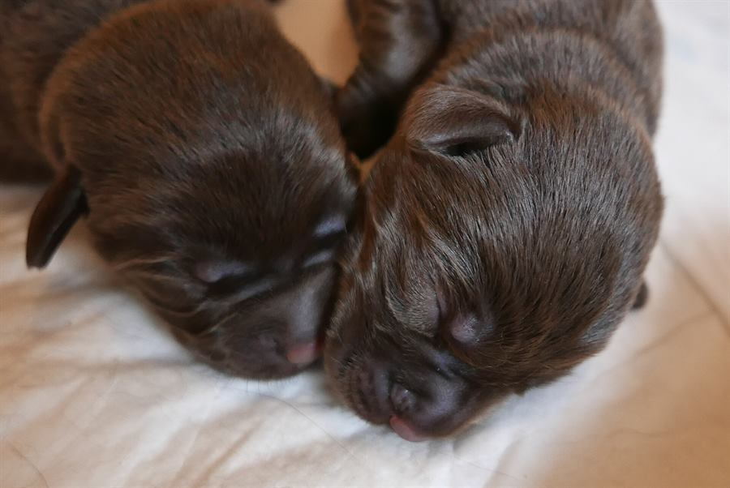

Mais do que uma clínica, um lugar de cuidado e carinho.
Acreditamos que cada pet merece atenção especial. Nossa missão é oferecer cuidado veterinário com responsabilidade, carinho e dedicação em todas as etapas da vida.
Uma casa pensada para cães, gatos e tutores.
A Clínica Grajaú nasceu de uma ideia simples: atender bem não é apenas resolver um problema de saúde — é acolher. É explicar com calma, examinar sem pressa e tratar cada animal como se fosse da família.
Por isso organizamos a clínica em torno do conforto do pet: consultórios silenciosos, espera separada para cães e gatos, e uma equipe que conversa com o tutor em todas as etapas do cuidado.
Hoje reunimos clínica geral, especialidades, laboratório e centro cirúrgico em um só lugar, para que você não precise correr de um lado para o outro quando o assunto é saúde do seu melhor amigo.
Conheça nossa equipe

Cuidar é combinar técnica e afeto.
Quatro compromissos que orientam cada atendimento, do agendamento ao acompanhamento pós-consulta.
-
Escuta primeiro
Você conhece seu pet como ninguém. Começamos ouvindo a sua percepção antes de examinar.
-
Clínica baseada em evidências
Condutas atualizadas, exames bem indicados e explicações sobre cada decisão de tratamento.
-
Prevenção sempre
Vacinas, check-ups e orientação nutricional para antecipar problemas e viver mais e melhor.
-
Parceria com o tutor
O cuidado continua em casa: você sai da consulta com um plano claro e suporte para seguir.
Tudo preparado para receber seu pet com segurança.
Ambientes separados para cães e gatos, fluxo de higiene rigoroso e equipamentos que permitem diagnóstico e tratamento no mesmo endereço.
- Consultórios amplos e baixo ruído
- Laboratório e apoio de imagem
- Sala de cirurgia com monitoramento
- Área de banho e higiene
- Estacionamento e acesso fácil


Cuidado contínuo, do filhote ao sênior.
Rotinas de prevenção, planos de tratamento e acompanhamento próximo em cada fase da vida do seu pet. Se ficar alguma dúvida depois da consulta, é só ligar para a gente.
